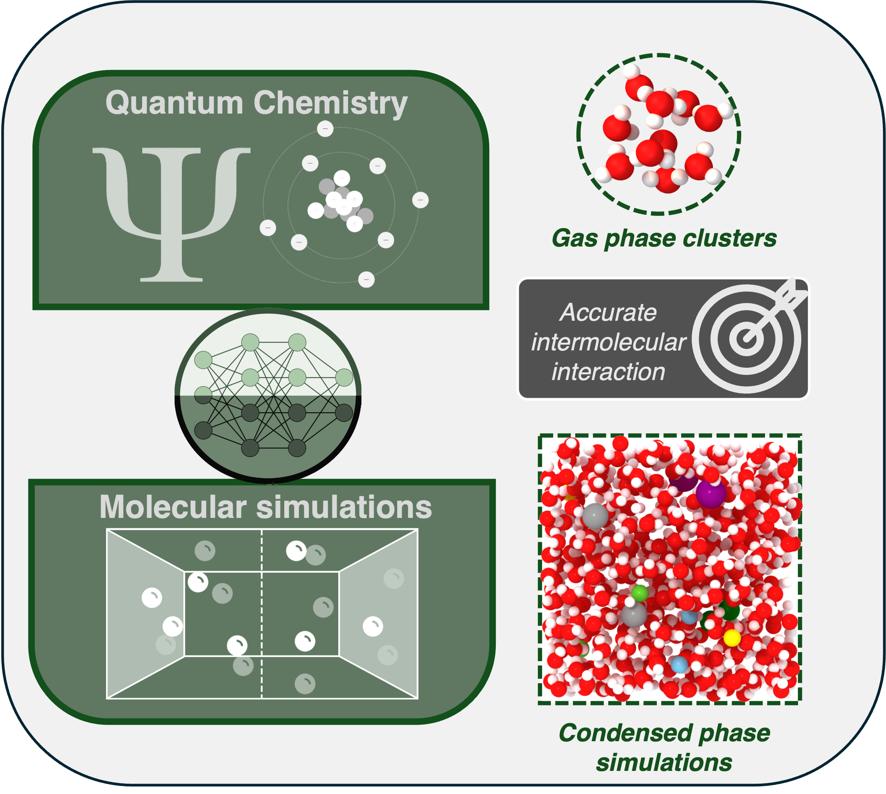
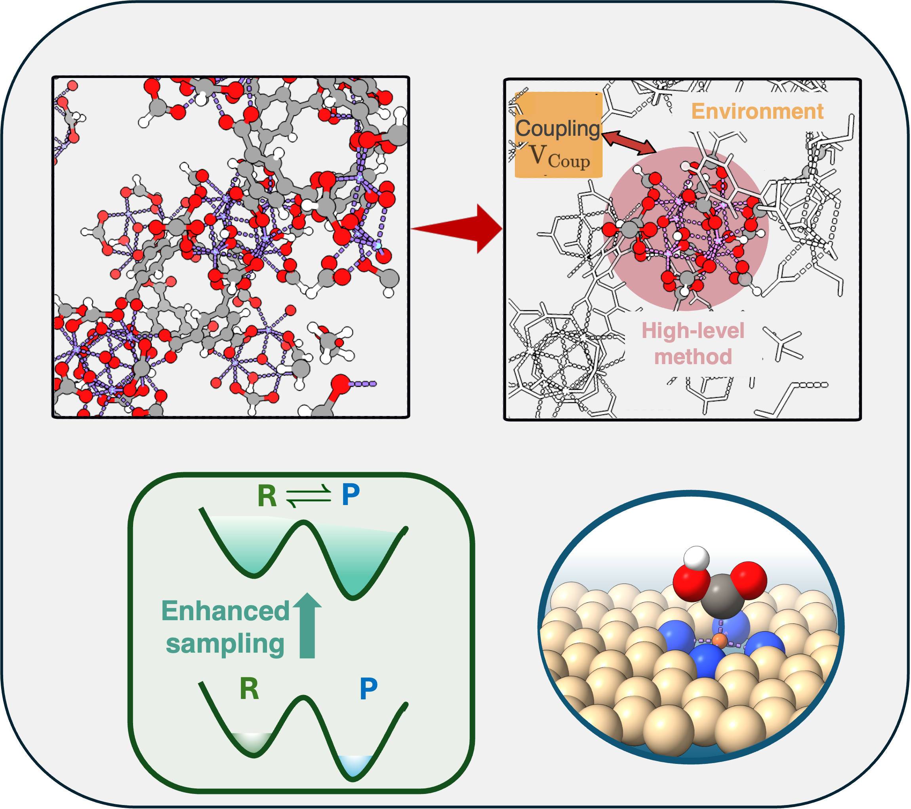

Our Research

Modeling Chemical Reactions in Condensed Phases
Studying chemical reactions in condensed phases, particularly liquids,is vital across many scientific domains. However, these complex processes can sometimes be difficult to characterize experimentally, highlighting the need for robust and predictive theoretical frameworks capable of capturing chemical reactivity in condensed phases on nanosecond timescales.
Our research combines high-level quantum chemical methods with advanced machine-learning architectures. This synergistic approach captures subtle intermolecular interactions across phases and enables efficient, predictive simulations of condensed-phase processes, coupled with enhanced sampling techniques to systematically explore reaction pathways and free-energy landscapes.

Computational Modeling of Chemical Reactivity in Materials
Chemical reactions at material interfaces and heterogeneous surfaces play a vital role in advancing industrial processes and addressing global challenges in energy, environmental sustainability, and chemical manufacturing. Accurate computational modeling of these reactions reveals performance metrics and informs the rational design of next-generation catalysts.
Our research focuses on developing methodologies that partition the system into a reactive center and an extended environment, allowing each to be described using approaches of appropriate accuracy and efficiency. This strategy enables detailed investigation of catalytic reactivity in materials—offering mechanistic insights into intermolecular interactions, reaction thermodynamics, and structure–property relationships.